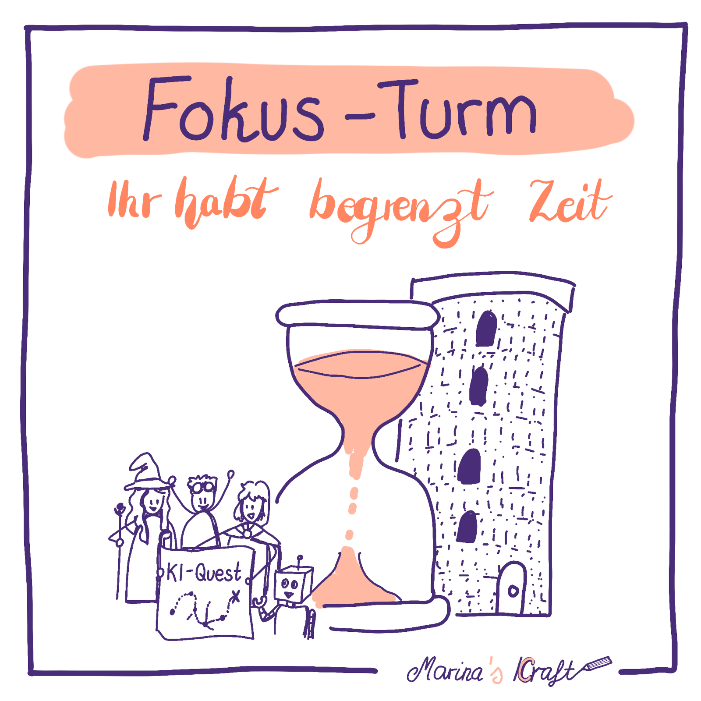
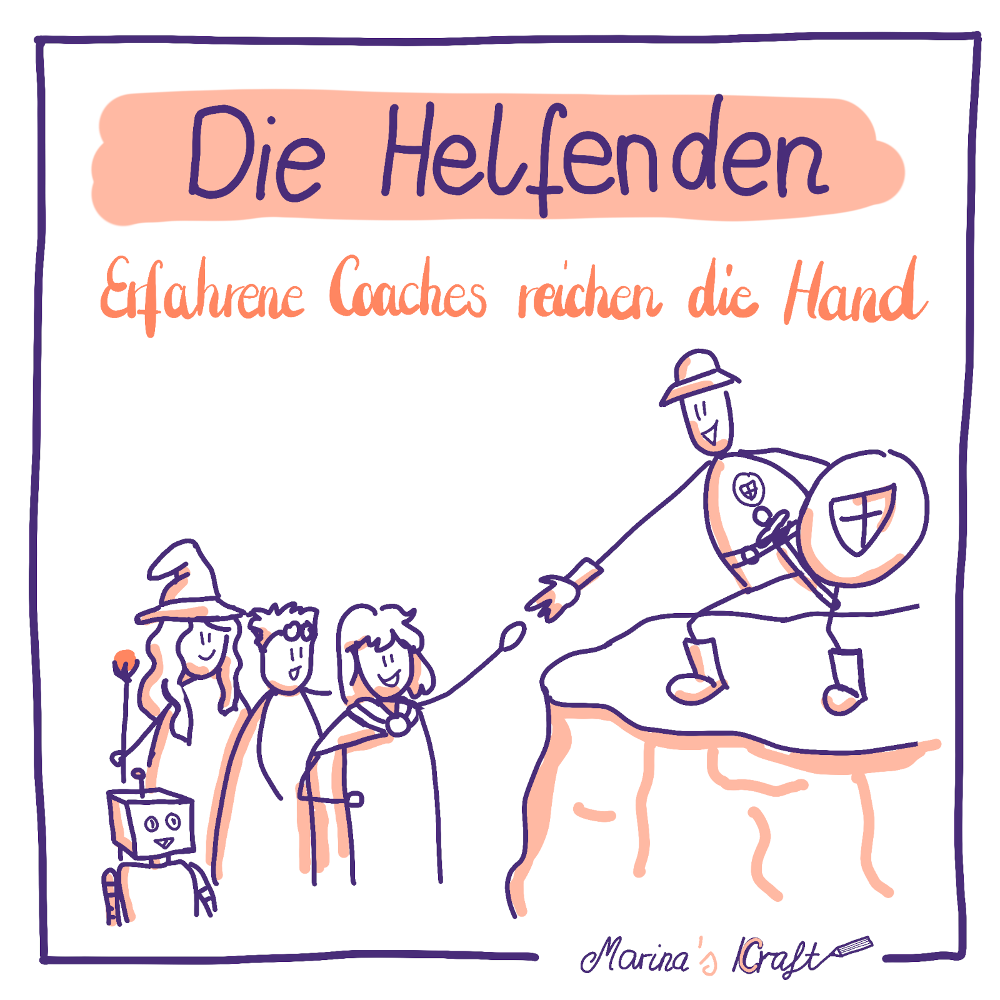
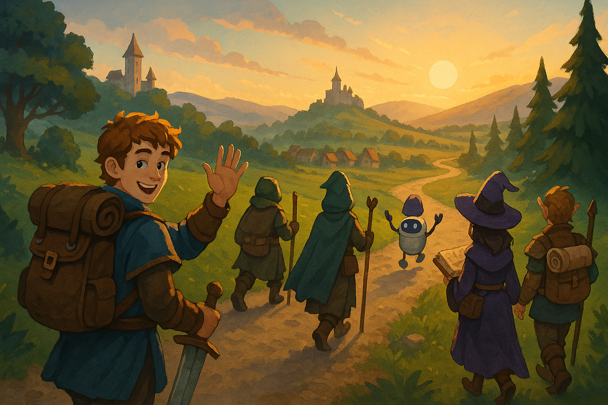

Promptathon – wie KI Upskilling in einem Teamformat gelingt
Promptathon -- wie KI Upskilling in einem Teamformat gelingt
Autorin: Marina Kraft
Willkommen beim Promptathon -- einem Lernformat, bei dem Menschen mit unterschiedlichen Erfahrungen, Erwartungen und Persönlichkeiten in Kleingruppen den Umgang mit KI praktisch erproben. Die Kombination aus klar definiertem Rahmen, ausreichend Zeit für praxisorientierte Gruppenarbeit und der Unterstützung durch erfahrene Coaches -- gepaart mit der Vielfalt der Teilnehmenden -- schafft eine dynamische Lernatmosphäre. Dieses Format bietet nicht nur Aha-Momente und Inspiration, sondern hält oft auch überraschende Wendungen bereit -- und zeigt, wie sich menschliche und künstliche Intelligenz im Zusammenspiel optimal ergänzen können.
Tauche mit mir ein in die Welt des Promptathons.
Der virtuelle Raum öffnet seine Pforten. Avatare erscheinen, Kameras schalten sich ein. Unter den Teilnehmenden: Hans, Sabine und Alex.
Hans, Projektmanager, hat außer ersten Gehversuchen mit KI noch wenig Erfahrung im Prompten und ist unsicher, ob KI wirklich nützlich ist oder nur ein vorübergehender Hype.
Sabine, Controllerin, sucht nach pragmatischen Wegen, ihre manuellen Aufgaben zu automatisieren.
Alex, Data Scientist, ist begeisterter KI-Anwender -- so sehr, dass er andere manchmal abhängt, gelegentlich sogar sich selbst.
Ihre unterschiedlichen Erwartungen, Erfahrungsstände und Persönlichkeiten spiegeln die Vielfalt des Publikums wider -- und genau diese Mischung macht den Reiz des Promptathons aus.
Was ist ein Promptathon?
Der Promptathon-Leitfaden der CLC beschreibt ihn folgendermaßen:
„Ein Promptathon ist eine Veranstaltung, bei der Teilnehmende in einer bestimmten Zeitspanne eine Vielzahl von kreativen Eingabeaufforderungen (Prompts) entwickeln, um eine bestimmte Aufgabe zu lösen. [...]. Während bei einem Hackathon meist Software oder Hardware entwickelt wird, konzentriert sich ein Promptathon auf die Entwicklung und Optimierung von Prompts für generative KI [...]. Dabei arbeiten die Teilnehmenden in Teams, um praktische Lösungen für verschiedene Herausforderungen zu finden."
Im Kontext von Corporate Learning bietet dieses Format die Möglichkeit, KI-Kompetenzen praxisnah zu entwickeln und gleichzeitig den Austausch zwischen Personen mit unterschiedlichen Vorkenntnissen zu fördern.

Ablauf -- Vom Plenum bis zum Finale
Auftakt im Plenum
Im Plenum wird die Agenda des dreistündigen Events präsentiert. Für Anfänger*innen werden Grundlagen des Promptens vorgestellt, danach wird die Auswahl der „Challenges" präsentiert.

Teilnehmende wählen aus einer Auswahl möglicher Aufgaben eine aus, die sie während der Veranstaltung bearbeiten werden.
Hans sitzt mit verschränkten Armen vor seinem Bildschirm und denkt: „Mal sehen, ob mich das überzeugt." Sabine blättert aufmerksam durch die Unterlagen und überlegt, welche Anwendungsbeispiele für sie relevant sein könnten. Alex hingegen kann seine Begeisterung kaum zurückhalten und füllt den Chat bereits mit Links und Tipps -- so schnell, dass kaum jemand hinterherkommt.
Die unterschiedlichen Herangehensweisen verdeutlichen, wie heterogen die Ausgangslage in einem Promptathon sein kann -- und wie wichtig es ist, ein gemeinsames Verständnis zu schaffen, bevor die Gruppenarbeit beginnt.
Kleingruppenarbeit
In Gruppen von drei bis sechs Personen suchen die Teilnehmenden sich eine Challenge aus und beginnen im Dialog mit der Bearbeitung. Diese Phase nimmt üblicherweise den größten Teil des Events ein, in der die heterogenen Teams praxisorientiert gemeinsam arbeiten. So wird nicht nur Wissen vermittelt, sondern auch der Erfahrungsaustausch gefördert. Erfahrene Coaches gehen von Gruppe zu Gruppe und geben bei Bedarf Hilfestellung und neue Impulse.

Kleingruppen brechen auf, um die gewählte Challenge mit KI-Unterstützung zu meistern.
Bereits nach kurzer Zeit entstehen erste Aha-Momente: Hans' Stirn glättet sich, als die KI in Sekunden eine ewig lange E-Mail-Kette mit erstaunlicher Präzision zusammenfasst. „Das hätte mich sonst bestimmt eine halbe Stunde gekostet...", murmelt er und lehnt sich vor. Sabine lacht leise, als ihr erster KI-generierter Automatisierungs-Code funktioniert -- „Das spart mir Stunden -- und das jeden Monat!" -- und tippt gleich die nächste Abfrage ein.

Durch Ausprobieren lernen Teilnehmende, mit der KI zu arbeiten.
Alex klickt sich durch versteckte Menüs, als hätte er eine Schatzkarte gefunden. Er erklärt den anderen als Knowhow-Tragender seiner Gruppe seine Herangehensweise. Durch Rückfragen reflektiert er sein eigenes, gewohntes Vorgehen und findet alternative Wege zur Lösung.
Und dann passiert das Unvorhergesehene.
Wenn etwas schiefgeht
Alex' Cursor schwebt über einem Post-it. Ein Klick. Dann noch einer. Plötzlich -- zack! -- verschwindet alles. Die Einführungsfolien, die Challenges, die Dokumentationen aller Gruppen. Stille. Viele Mauszeiger schwirren verwirrt über das nun seinem Namen alle Ehre machende „White-Board". „Äh... Leute?" tippt jemand in den Chat. Innerhalb von Sekunden explodiert die Kommentarspalte: „Wo sind die Inhalte?!" -- „Unsere Doku ist weg!" -- „Sehen nur wir in Raum 24 nichts, oder geht es allen so?" Hans atmet tief durch. „Wenn ich nicht weiterkomme, frage ich die KI", erinnert er sich. Wenige Minuten später hat er gemeinsam mit dem Orga-Team das Backup wiederhergestellt. Alex macht sich mit einem schiefen Grinsen als Lösch-Übeltäter erkenntlich, lacht über sich selbst und bedankt sich bei Hans. Sabine bringt es auf den Punkt: „KI ist nicht für alles die Lösung -- es braucht ein gutes Team aus künstlicher und menschlicher Intelligenz, um gemeinsam ans Ziel zu kommen."
Zustimmende virtuelle Hände beklatschen die Aussage.
Diese Szene verdeutlicht, dass in einem Promptathon durch die Interaktivität und vor allem durch die Bereitstellung des Formats für eine große Gruppe virtueller Teilnehmenden viele Tools an ihre Grenzen stoßen und daher unerwartete Probleme auftreten können. Doch mit einem souveränen, gut vorbereiteten Orga-Team und hilfsbereiten Teilnehmenden gibt es kaum Hindernisse, die nicht mit einem Schmunzeln überwunden werden können.
Präsentationen & Erkenntnisse
Nach einer kurzen Extra-Arbeitsphase stellen die Gruppen ihre Ergebnisse vor.
Hans notiert sich begeistert Ideen anderer Teams.
Sabine präsentiert souverän ihre Automatisierungen, Herz-Emojis fluten den Chat.
Alex sitzt still und murmelt: „Ah, so geht das also auch..."

Teilnehmende lassen andere an den Erfahrungen ihrer Gruppenarbeit teilhaben.
„Never Prompt alone" -- Prompte nie allein -- wurde als Motto in die Welt getragen bei der Convention 2024 der lernOS, einem Partnernetzwerk der CLC. Wenn die Präsentationen der verschiedenen Gruppen eines zeigten, dann das: Der Ausbau individueller KI-Kompetenz ist wichtig, doch ebenso entscheidend ist das gemeinsame Erarbeiten und Reflektieren von Lösungen in der Gruppe. Denn eins ist sicher -- jede*r für sich, und gleichzeitig alle gemeinsam können wir mit dem Teammitglied KI die Zusammenarbeit und die Leistungsfähigkeit in unseren Organisationen revolutionieren.
Das Format
Jetzt hast du eine Vorstellung davon, wie ein Promptathon ablaufen kann. Doch welche Entscheidungen muss ein Orga-Team treffen, um dieses Event auf die Beine zu stellen?
Der Promptathon kann komplett virtuell (z.B. wie bei Continental und SAP), komplett live vor Ort (z.B. wie bei der DATEV) oder auch hybrid (z.B. wie beim SAP Learning Forum, der lernOS CON25 und dem CLC 2024) stattfinden. Der zeitliche Rahmen liegt typischerweise bei 2 - 8 Stunden und wird am Stück als einmaliges Event durchgeführt.

Innerhalb von 2-8 Stunden bearbeiten Teilnehmende eine ausgewählte Aufgabe.
Wichtig ist:
-
Zugang zu einem oder mehreren KI-Systemen sicherstellen
-
Bei virtueller Durchführung eine zentrale digitale Arbeitsfläche bereitstellen, z. B. Miro, Whiteboard, Conceptboard
-
Klare und praxisnahe Challenges formulieren
-
Erfahrene Coaches einbinden, die Impulse geben und Neulinge unterstützen
-
Modell für die Gruppenbildung festlegen -- Möglichkeit A: zufällige Zusammensetzung, bei der die Gruppe anschließend gemeinsam eine Challenge auswählt. Möglichkeit B: gezielte Zusammenstellung von Teilnehmenden, die dieselbe Challenge bearbeiten möchten. Für beide Varianten sind im virtuellen Raum entsprechende organisatorische und technische Voraussetzungen erforderlich.
Für weitere Infos dazu, wie ein Promptathon organisiert werden kann, steht der Promptathon-Leitfaden als Referenz zur Verfügung.
Warum ein Promptathon wirkt: Nutzen für die Teilnehmenden
Ein Promptathon bietet einen geschützten Raum, in dem die Arbeit mit KI mit wenig Input, dafür durch unterstütztes Learning by Doing erkundet und dadurch erlebbar gemacht werden kann. An das Publikum angepasste Challenges zeigen Problemfelder auf, in denen KI eingesetzt werden kann. Denn auch das ist ein Muskel, der trainiert werden will: Erkennen, wo der Alltag Einsatzmöglichkeiten bereithält. Das einmalige, gebündelte Format sorgt dafür, dass man sich „endlich mal Zeit nimmt", sich mit KI auseinanderzusetzen -- statt dieser Art von Weiterbildung, wie „den stetig wachsenden Berg schmutziger Wäsche" so lange wie möglich weg-zu-prokrastinieren. Das durch Coaches begleitete Format hilft Einsteigenden, Hemmschwellen abzubauen und Sicherheit im Umgang mit KI zu gewinnen. Fortgeschrittene wiederum erkunden neue Lösungswege und Einsatzmöglichkeiten.
{width="2.3622047244094486in" height="2.3622047244094486in"}
Erfahrende Coaches strecken Teilnehmenden eine helfende Hand entgegen.
Feedbacks von Teilnehmenden reichen von „Normalerweise denke ich ‚Nicht schon wieder ein neues Tool'. Aber ich glaube, dieses wird mir tatsächlich helfen" bis hin zu „Das werde ich morgen direkt bei mir im Projekt ausprobieren!"
Der Fun-Faktor und die positive Lernerfahrung haben einen langanhaltenden Effekt, der dafür sorgt, dass sich Teilnehmende kontinuierlich mit den sich stetig verändernden Möglichkeiten der Arbeit mit KI auseinandersetzen.
Warum ein Promptathon wirkt: Nutzen für Organisationen
Der Mehrwert von Promptathons geht über den individuellen Kompetenzgewinn hinaus. Unternehmen und Organisationen stehen vor der Herausforderung, nicht nur skalierbare KI-Lösungen für sich zu identifizieren und zu implementieren, sondern auch ihre Mitarbeitenden an die Nutzung von KI heranzuführen.
Nur Mitarbeitende, die sowohl die Grenzen als auch die Möglichkeiten von KI kennen, und bereit sind, KI-Kompetenz aufzubauen, können bereitgestellte Tools im Unternehmenskontext effektiv nutzen.
Das Mindset des lebenslangen Lernens unter Mitarbeitenden zu nähren, damit sie sich proaktiv mit KI auseinandersetzen, sie erkunden, und für ihr Unternehmen nutzbar machen, ist unabdingbar, um eine Organisation zukunftsfähig zu halten. Unternehmen, die Formate wie den Promptathon für sich nutzen, fördern diese Schlüsselkompetenz gezielt, und ebnen sich damit ihren eigenen Weg in eine erfolgreiche Zukunft.
Weitere Beispiele aus der Praxis
Die folgende Übersicht zeigt ausgewählte Promptathons, die bis Sommer 2025 durchgeführt wurden. Die zugehörigen Referenzen finden sich im Literaturverzeichnis.
- Telekom: Sep. 2023
- DATEV: Feb. 2024
- CLC: Apr. 2024
- Continental: Mär. 2025
- SAP Learning Forum: Jun. 2025
- lernOS Convention: Jul. 2025
Der CLC Promptathon gehörte zu den ersten Veranstaltungen dieser Art im deutschsprachigen Raum. Aus den Erfahrungen wurde ein Leitfaden entwickelt, der öffentlich zugänglich ist.
Fazit
Der erste Promptathon bei Continental, inspiriert von Vorläufern wie dem CLC Promptathon, bot den Teilnehmenden die Möglichkeit, spielerisch die Potenziale von KI zu erkunden und dabei wertvolle Verbindungen zu knüpfen, die bei weiteren Erkundungsritten durch den verwunschenen Wald der KI-Landschaft helfen können. Hans hat seine Skepsis verloren, Sabine ihre Automatisierungen gefunden, und Alex... klickt jetzt mit Bedacht.
Vielleicht ist das die wahre Magie des Promptathons: zu erleben, dass Vielfalt nicht trennt, sondern verbindet -- und dass KI ihr volles Potenzial entfaltet, wenn wir sie gemeinsam entdecken.

Teilnehmende brechen auf zu den Herausforderungen ihres Alltags -- gemeinsam mit neuen Gefährten und der KI als Wegbegleiterin. Verwendet bei der lernOS Convention 2025. Bild erstellt mit GenAI.